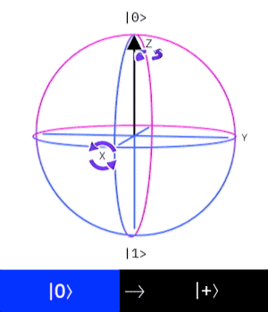

بوابة هادامارد \((Hadamard gate)\)
وهي عبارة بوابة أحادية الكيوبت تقوم بإدخال الكيوبت في الوضع الفائق(superposition) عن طريق القيام بعملية دوران حول المحور x بمقدار 90 درجة و حول المحور y بمقدار 180 درجة في كرة بلوخ
- تمثيل ديراك
\(|0〉\rightarrow\frac{1}{\sqrt{2}}\ (|0〉+|1〉)\)
\(|1〉\rightarrow\frac{1}{\sqrt{2}}\ (|0〉-|1〉)\)
- تمثيل البوابة بمصفوفة
\(H=\frac{1}{\sqrt{2}}\begin{bmatrix}1&1\\1&-1\\\end{bmatrix}\)
- إجراء العملية رياضياً
\(|0〉=H \begin{bmatrix}1\\0\end{bmatrix}\Rightarrow \frac{1}{\sqrt{2}}\begin{bmatrix}1&1\\1&-1\\\end{bmatrix}\begin{bmatrix}1\\0\end{bmatrix}=\frac{1}{\sqrt{2}}\begin{bmatrix}1\\1\end{bmatrix}\)
\(|1〉=H \begin{bmatrix}0\\1\end{bmatrix}\Rightarrow \frac{1}{\sqrt{2}}\begin{bmatrix}1&1\\1&-1\\\end{bmatrix}\begin{bmatrix}0\\1\end{bmatrix}=\frac{1}{\sqrt{2}}\begin{bmatrix}1\\-1\end{bmatrix}\)
- تمثيل العملية على كرة بلوخ
